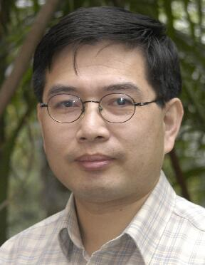

{Chang Tang} received his Ph.D. degree from Tianjin University, Tianjin, China in 2016. He joined the AMRL Lab of the University of Wollongong between Sep. 2014 and Sep. 2015. He is now a full professor at the School of Computer Science, China University of Geosciences, Wuhan, China. Dr. Tang has published 80+ peer-reviewed papers, including those in highly regarded journals and conferences such as IEEE T-PAMI, IEEE T-MM, IEEE T-KDE, IEEE T-GRS, IEEE T-HMS, ICCV, CVPR, IJCAI, AAAI and ACM MM, etc. He serves as an associate editor of BMC Bioinformatics, young editor of CAAI Transactions on Intelligence Technology, and Computer Engineering. He regularly serves on the Technical Program Committees or as Area Chair of some top conferences such as NIPS, ICML, CVPR, ICCV, ECCV, IJCAI, ICME and AAAI. He won the best paper award of the 5th Asian Conference on Artificial Intelligence Technology. His current research interests include machine learning and computer vision.
School of Computer Science, China University of Geosciences, Wuhan 430074, China. tangchang@cug.edu.cn
>
{Lizhe Wang (Fellow, IEEE)} received the B.E. and M.E. degrees from Tsinghua University, Beijing, China, and the Dr.Eng. (Magna Cum Laude) degree from the University of Karlsruhe, Karlsruhe, Germany. He is currently a ChuTian Chair Professor with the School of Computer Science, China University of Geosciences, Beijing, and also a Professor with the Institute of Remote Sensing and Digital Earth, Chinese Academy of Sciences, Beijing. His research interests include high-performance computing, eScience, and remote sensing image processing. Dr. Wang is a fellow of the IET and the British Computer Society. He serves as an Associate Editor of the IEEE Transactions on Parallel and Distributed Systems, the IEEE Transactions on Cloud Computing, and the IEEE Transactions on Sustainable Computing.
School of Computer Science, China University of Geosciences, Wuhan 430074, China. lizhe.wang@gmail.com

Xinwang Liu received his PhD degree from National University of Defense Technology (NUDT), China. He is now Assistant Researcher of School of Computer Science, NUDT. His current research interests include kernel learning and unsupervised feature learning. Dr. Liu has published 60+ peer-reviewed papers, including those in highly regarded journals and conferences such as IEEE T-PAMI, IEEE T-IP, IEEE T-NNLS, ICCV, AAAI, IJCAI, etc. He regularly serves on the Technical Program Committees of top conferences such as NIPS, ICML, CVPR, ICCV, IJCAI and AAAI.
School of Computer, National University of Defense Technology, Changsha 410073, P.R. China. E-mail: xinwangliu@nudt.edu.cn
Albert Y. ZOMAYA is the Peter Nicol Russell Chair Professor of Computer Science in the School of Computer Science, Sydney University, and serves as the Director of the Centre for Distributed and High-Performance Computing. Professor Zomaya published more than 700 scientific papers and articles and is author, co-author or editor of more than 30 books. He is the Editor in Chief of the ACM Computing Surveys and serves as an associate editor for several leading journals.
Professor Zomaya is a decorated scholar with numerous accolades including Fellowship of the IEEE, AAS, and the IET. Also, he is a Fellow of the Australian Academy of Science, Fellow of the Royal Society of New South Wales, Foreign Member of Academia Europaea, and Member of the European Academy of Sciences and Arts. His research interests are in the areas of parallel and distributed computing, networking, and complex systems.
School of Information Technologies, University of Sydney, NSW 2006, Australia. albert.zomaya@sydney.edu.au
Dou Jie is a Professor at the China University of Geosciences, China. He obtained his Ph.D. from the University of Tokyo and extended his experience at the University of Tokyo, the Public Works Research Institute, etc. He has participated in research projects on earthquake/rainfall-triggered geohazards, spatial analysis with artificial intelligence (AI), and risk mitigation. He got a Japan Society for the Promotion of Science (JSPS) fellowship. He has authored/ co-authored over 100 peer-reviewed articles. He served as an Associate Editor of Frontiers in Earth Science, and on the editorial boards of several other international journals, like the Journal of Mountains Science, Geocarto International, Geomatics, Natural Hazards and Risk. He has besides served as a reviewer for over 30 ISI-listed international journals. He has been a steering committee member for several commissions/working groups of international academic societies, such as the World Landslide Forum 5, BIGS2021, etc.
Badong National Observation and Research Station of Geohazards, China University of Geosciences, Wuhan 430074, China. doujie@cug.edu.cn.
Wei Zhang received the B.E. degree from Zhejiang University in 2004, the M.S. degree from Liaoning University in 2008, and the Ph.D. degree from Shandong University of Science and Technology in 2018. He is currently an Associate Professor with the Shandong Computer Science Center (National Supercomputing Center in Jinan), Qilu University of Technology (Shandong Academy of Sciences). His research interests include future generation network architectures, edge computing and edge intelligence.
Shandong Provincial Key Laboratory of Computer Networks, Shandong Computer Science Center (National Supercomputing Center in Jinan), Qilu University of Technology (Shandong Academy of Sciences), Jinan 250000, P.R. China. wzhang@qlu.edu.cn
Xiao Zheng received her master degree from the Tianjin Medical University, Tianjin, China. She is currently pursuing the Ph.D. degree with the National University of Defense Technology, China. Her recent research interests include machine learning and medical data processing.
School of Computer, National University of Defense Technology, Changsha 410073, China. zhengxiao@nudt.edu.cn
{Kun Sun (Member, IEEE)} Dr. Kun Sun is now working as an Associate Professor at School of Computer Science, China University of Geosciences (CUG), Wuhan, China. Before joining CUG, he received his PhD from School of Artificial Intelligence and Automation, Huazhong University of Science \& Technology (HUST), Wuhan, China. His research focuses on 3D related computer vision algorithms, such as multi-view image matching, large scale Structure from Motion (SfM) and 3D point cloud processing.
School of Computer Science, China University of Geosciences, Wuhan 430074, China. sunkun@cug.edu.cn
{En Zhu} Dr. En Zhu received the Ph.D. degree from the National University of Defense Technology (NUDT), China. He is currently a Professor at the School of Computer Science, NUDT. His main research interests are pattern recognition, image processing, machine vision, and machine learning. He has published over 150 peer-reviewed papers, including IEEE TRANSACTIONS ONCIRCUITS ANDSYSTEMS FOR VIDEO TECHNOLOGY, IEEE TRANSACTIONS ON NEURALNETWORKS ANDLEARNINGSYSTEMS, PR, AAAI, and IJCAI. He was awarded the China National Excellence Doctoral Dissertation.
School of Computer, National University of Defense Technology, Changsha 410073, China. enzhu@nudt.edu.cn

{Wanqing Li} (SM'12) received his PhD in electronic engineering from The University of Western Australia. He was an Associate Professor (91-92) at Zhejiang University, a Senior Researcher and later a Principal Researcher (98-03) at Motorola Research Lab, and a visiting researcher (08,10 and 13) at Microsoft Research US. He is currently a Professor and Director of Advanced Multimedia Research Lab (AMRL) of University of Wollongong, Australia. His research areas include machine learning, 3D computer vision, 3D multimedia signal processing and medical image analysis.
Dr. Li is now a Senior Member of IEEE. He serves as an Associate Editor for IEEE Transactions on Circuits and Systems for Video Technology, IEEE Transactions on Multimedia and Journal of Visual Communication and Image Representation.
School of Computing and Information Technology, University of Wollongong, NSW, 2500, Australia. wanqing@uow.edu.au
{Xinzhong Zhu} is a professor at College of Mathematics, Physics and Information Engineering, Zhejiang Normal University, PR China. He received his Ph.D. degree at XIDIAN University, China. His research interests include machine learning, computer vision, manufacturing informatization, robotics and system integration, and intelligent manufacturing. He is currently focusing on kernel learning and feature selection, multi-view clustering algorithms, real-time object detection (e.g., pedestrian detection, vehicle detection, general object detection, etc.) and deep lea
College of Mathematics, Physics and Information Engineering, Zhejiang Normal University, Jinhua, China, and also with the Research Institute of Ningbo Cixing Co. Ltd, Ningbo 315336, China. zxz@zjnu.edu.cn)
{Zhiguo Wan} is a principal investigator in the Zhejiang Lab, Hangzhou, Zhejiang, China. His main research interests include security and privacy for cloud computing, Internet-of-Things and blockchain. He received his B.S. degree in computer science from Tsinghua University in 2002, and Ph.D. degree in information security from National University of Singapore in 2007. He was a postdoc in Katholieke University of Leuven, Belgium and an assistant professor in the School of Software, Tsinghua University, Beijing, China.
Zhejiang Lab, Hangzhou 311121, P.R. China. wanzhiguo@zhejianglab.com
{Shan An} (Senior Member, IEEE) received a Bachelor's degree in Automation Engineering from Tianjin University, China in 2007 and a Master's degree in Control Science from Shandong University, China, in 2010. He received the Ph.D. degree in computer science from Beihang University in 2022.He is currently the team leader of the vision algorithm group of JD Health International Inc. He has authored or co-authored more than 30 papers in journals and conferences. He has more than 30 patents granted in China and 8 patents granted in the United States, Japan and Russia. He has served as a program committee member for ACM Multimedia (2019-2022), AAAI (2022), and IJCAI (2021-2024). He is a reviewer of more than twenty highly prestigious journals and conference papers, such as IEEE TRANSACTIONS ON NEURAL NETWORKS AND LEARNING SYSTEMS, IEEE TRANSACTIONS ON MULTIMEDIA, and Pattern Recognition, CVPR, ICCV, ICRA, etc. His research interests include computer vision in AR and robotics, image retrieval, and image segmentation.
JD Health International Inc. anshan@jd.com
{Xianju Li} Xianju Li received the B.S. in geomatics engineering, M.S. in geodesy and survey engineering, and Ph.D. in surveying and mapping from China University of Geoscience, Wuhan, China, in 2009, 2012, and 2016, respectively. Since 2016, he has been an associate professor in the School of Computer Science, China University of Geosciences. He has published more than 20 papers. His main research fields include remote sensing image processing and analysis, computer vision, and machine learning.
School of Computer Science, China University of Geosciences, Wuhan 430074, China. ddwhlxj@cug.edu.cn
Weiying Xie (Member, IEEE) received a B.S. degree in electronic information science and technology from the University of Jinan in 2011. She received an M.S. degree in communication and information systems, Lanzhou University in 2014, and the Ph.D. degree in communication and information systems of Xidian University in 2017. Currently, she is an Associate Professor with the State Key Laboratory of Integrated Services Networks, Xidian University. Her research interests include neural networks, machine learning, hyperspectral image processing, and high-performance computing.
State Key Laboratory of Integrated Services Networks (Xidian University), Xi'an 710071, China. wyxie@xidian.edu.cn
Grants: The work was supported in part by the National Natural Science Foundation of China (No. 62076228 and 62176242), and in part by the Natural Natural Science Foundation of Shandong Province (No. ZR2021LZH001)